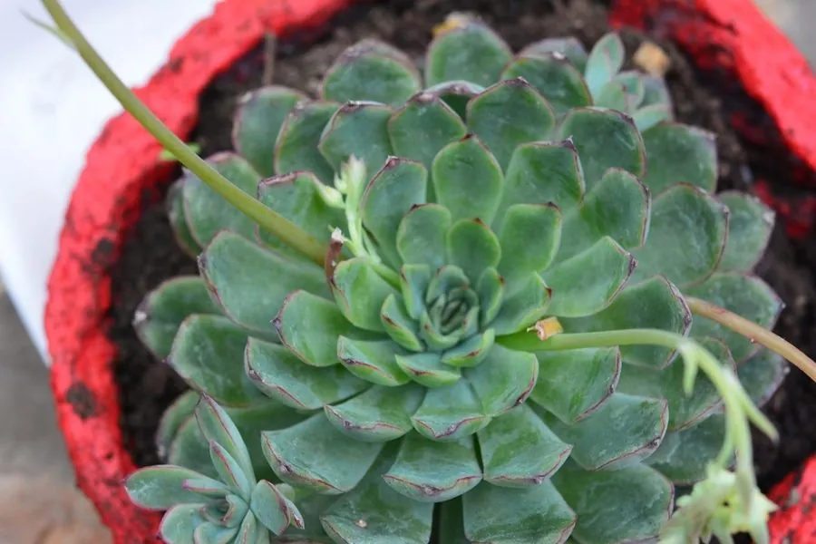

多肉植物 · 植物界
花月夜 Echeveria pulidonis

景天科拟石莲花属小型多肉，叶片淡蓝绿色、叶缘有鲜艳红边，莲座如玫瑰，原产墨西哥，是热门桌面多肉。
- 分类
- 门被子植物门纲木兰纲目虎耳草目科景天科属拟石莲花属
- 栖息环境
- 墨西哥干旱山地的岩石坡地，喜光、干燥、通风
- 地理分布
- 原产墨西哥，世界各地盆栽栽培，中国各地多肉市场常见
- 保护级别
- 暂无评估
物种志
花月夜为景天科拟石莲花属小型多肉植物，株高 5–10 厘米，叶片匙形，肉质肥厚，淡蓝绿色，表面覆薄白粉，叶缘在光照充足时呈鲜艳的红色，螺旋排列成紧凑的莲座，直径 10–15 厘米。花葶自叶腋抽出，花小，黄色，花期春季；果实为蓇葖果。
花月夜原产墨西哥的干旱山地，喜阳光充足、凉爽干燥和通风良好的环境，耐旱怕积水，夏季高温时短暂休眠。它叶缘的红边会随光照和温差变化，日照充足、昼夜温差大时最为鲜艳，因此深受多肉爱好者喜爱。栽培以颗粒土为主，春秋生长季可充分浇水；叶插和分株都容易成活，母株基部常萌发侧芽形成群生，适合养成多头老桩。
形态与习性
- 株高5–10 厘米，莲座直径 10–15 厘米
- 花期春季，花小，黄色
- 果期花后结蓇葖果
- 光照喜充足阳光，夏季高温需遮阴
- 水分耐旱，见干见湿，忌积水
- 土壤颗粒为主、排水良好的矿质土
- 繁殖叶插、分株
- 主要用途桌面盆栽、多肉拼盘
趣味知识
- 花月夜叶缘的红边在光照充足、温差大时最鲜艳。
- 它的莲座紧凑如玫瑰，是拟石莲花属中的人气品种。
- 母株基部容易萌发侧芽，可养成多头群生的株形。
- 夏季高温时花月夜会短暂休眠，此时应控水并遮阴。